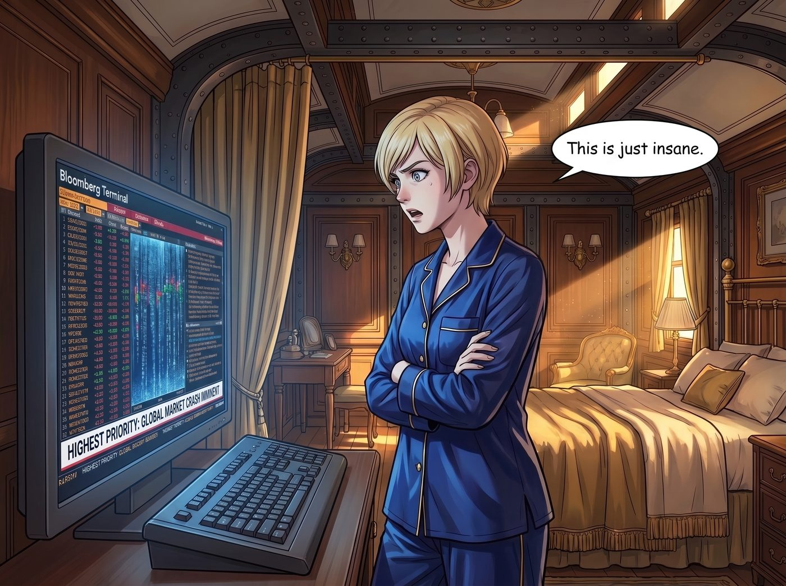

船票與鏟子（上）：神盾系統

Victoria 的私人臥鋪車廂裡，那台造價高昂的彭博終端機正發出幽暗的藍光，螢幕上密密麻麻的紅綠色數據流像瀑布一樣傾瀉而下。
「這簡直是瘋了。」Victoria 穿著真絲睡衣，雙手環抱在胸前，盯著螢幕上那條被標註為『最高優先級』的滾動新聞，「『神盾系統（Aegis Protocol）』，一家號稱用革命性 AI 演算法重塑全球物流網路的新創公司。過去四十八小時內，華爾街日報、TechCrunch，甚至我爺爺那個自命不凡的家族信託基金經理，都在瘋狂推送這家公司的消息。它的盤前估值已經翻了三倍。他們說這項技術能解決所有的供應鏈危機，簡直像是某種數位救世主。」
「所以呢？妳要砸錢進去當信徒嗎？」Chloe 懶洋洋的聲音從中節車廂的公共區傳來。她正四仰八叉地躺在波西米亞地毯上，腦袋舒舒服服地枕在 Max 的大腿上。Max 一手拿著剛拍好的拍立得底片輕輕扇風，另一隻手則下意識地、溫柔地順著 Chloe 凌亂的藍色短髮。這是她們最常見的「平凡日常」，不需要對抗世界，只需要對抗午後的睏意。
「我這叫合理的市場敏銳度，Chloe。」Victoria 翻了個優雅的白眼，「當所有資訊來源都在告訴你『發現了新大陸』時，即使是我，也會忍不住想看看那艘船長什麼樣子。」
這時，Lily 端著一杯熱氣騰騰的燕麥奶，踩著毛茸茸的拖鞋走了過來。她沒有帶平板電腦，也沒有推那副標誌性的圓框眼鏡，只是用一種近乎看待兒童遊樂場的平靜眼神，瞥了一眼那台閃爍的彭博終端機。
「Victoria 學姐，」Lily 喝了一口燕麥奶，語氣軟糯卻帶著一針見血的清醒，「那不是新大陸。那只是一個包裝精美的、為了收割注意力而建造的楚門的世界。」
Victoria 挑起了一邊的眉毛，等著她的下文。
Lily 甚至懶得去查這家公司的代碼，她只是憑藉著對商業法規和資本運作的肌肉記憶，慢條斯理地拆解了這個神話： 「『技術萬能論』是這個世紀最成功的營銷騙局。每隔幾個月，矽谷就會發明一個新詞彙——區塊鏈、元宇宙、去中心化 AI 網路——然後告訴大眾，這項技術將解決人類所有的問題。但如果你去翻閱這家『神盾系統』提交給 SEC（美國證券交易委員會）的 S-1 招股說明書，翻到第十七頁風險披露的附註小字，你會發現他們的『核心演算法』，底層依賴的依然是第三方的開源程式碼，甚至連資料中心的租賃合約都還沒簽滿三年。」
「那為什麼各大媒體都在瘋狂報導？連彭博終端機的頭條都被他們買斷了？」Victoria 皺起眉頭。
「因為莊家在做多，Victoria 學姐。」Lily 輕輕嘆了口氣，彷彿在陳述一個無聊的物理定律，「當華爾街的頂級資本或者某些需要轉移公眾視線的政府部門，決定要捧紅一個概念時，他們擁有足夠的資金去買下整個注意力經濟的版面。他們把這些經過精密計算的新聞，精準地推送到妳的終端機、推特時間線和家族群組裡。妳以為妳憑藉敏銳的直覺發現了財富密碼，但實際上，妳只是他們用來完成高位套現的『流動性出口』。這就是一場巨大的、合法的大型實境秀。」
Chloe 在 Max 腿上翻了個身，打了個大大的哈欠：「所以，這幫穿西裝的混蛋又在用一堆看不懂的代碼名詞來騙錢了？」
「總結得非常精準，Chloe 學姐。」Lily 點了點頭。
「那妳打算怎麼做，Lily？」Max 停下手中扇風的動作，有些好奇地看著她，「妳要找出他們的財報漏洞，然後寫一封匿名信舉報他們嗎？」
在過去，那個被父母留下的焦慮驅動、對任何「系統性不合理」都充滿攻擊性的 Lily，或許真的會這麼做。她會熬夜整理出三百頁的分析報告，精準打擊對方的合規漏洞，以此來證明自己的控制力。
但現在，Lily 只是站在那裡，感受著手心裡燕麥奶的溫度。她看著躺在 Max 腿上像隻慵懶大型犬的 Chloe，看著正在廚房裡安靜地給烤盤刷奶油的 Kate，然後低下頭，嘴角揚起一個極其輕微、卻無比放鬆的微笑。
「不，Max 學姐。」Lily 輕聲說道。
她走回自己的工作站，但沒有碰那排鍵盤，而是從抽屜裡拿出了一本講述奧林匹亞半島植物分布的實體圖鑑。
「技術不是萬能的，揭穿他們也不是我的義務。這個世界永遠不缺製造焦慮的莊家，也不缺甘願被收割的信徒。如果我把我的頻寬浪費在對抗每一場虛假的狂歡上，那我就等於默許了他們來支配我的注意力。」
Lily 坐進那張寬大的辦公椅裡，翻開了那本帶著紙張香氣的圖鑑，這才是她真正意義上的「鹹魚時刻」。這是一種清醒的退讓，一種看透了資本運作的龐大機器後，主動選擇的不參與。
「我不打算理會這家公司，也不打算關心華爾街的狂熱。相比於去看那些被算法精確推送到眼前的『新大陸』……」Lily 轉過頭，看向廚房，「Kate 學姐，妳剛才說今晚的晚餐是迷迭香烤羊排對嗎？」
「對呀，還配了妳最喜歡的馬鈴薯泥，再等半個小時就好了。」Kate 溫柔的聲音伴隨著烤箱運作的微弱嗡嗡聲傳來。
「太好了。」Lily 滿意地推了推圓框眼鏡。
Victoria 看著螢幕上還在瘋狂閃爍的股價，最終煩躁地「嘖」了一聲，果斷按下了電源鍵。終端機瞬間熄滅，車廂裡少了一份令人焦慮的藍光，多了一份柴火爐燃燒的暖意。
「去他的神盾系統，」Victoria 重新披上她那件喀什米爾披肩，走向廚房，「Kate，我要在我的馬鈴薯泥裡多加一塊奶油。就當是我今天沒有被割韭菜的自我獎勵。」
Chloe 仰起頭，在 Max 的下巴上輕輕印下一個吻，笑著說：「看來我們的行政大腦終於學會了最高級的防禦機制——『關我屁事』。」
Max 忍不住笑了出來，手指輕輕摩挲著 Chloe 的後頸。在這個與世隔絕的三節車廂裡，外面的世界無論被資本攪得如何天翻地覆、無論發明了多少製造焦慮的萬能神話，都無法穿透這層名為「日常」的溫暖結界。而 Lily，也終於在這些學姐們的包容下，找到了屬於自己的、最舒適的那片海域。